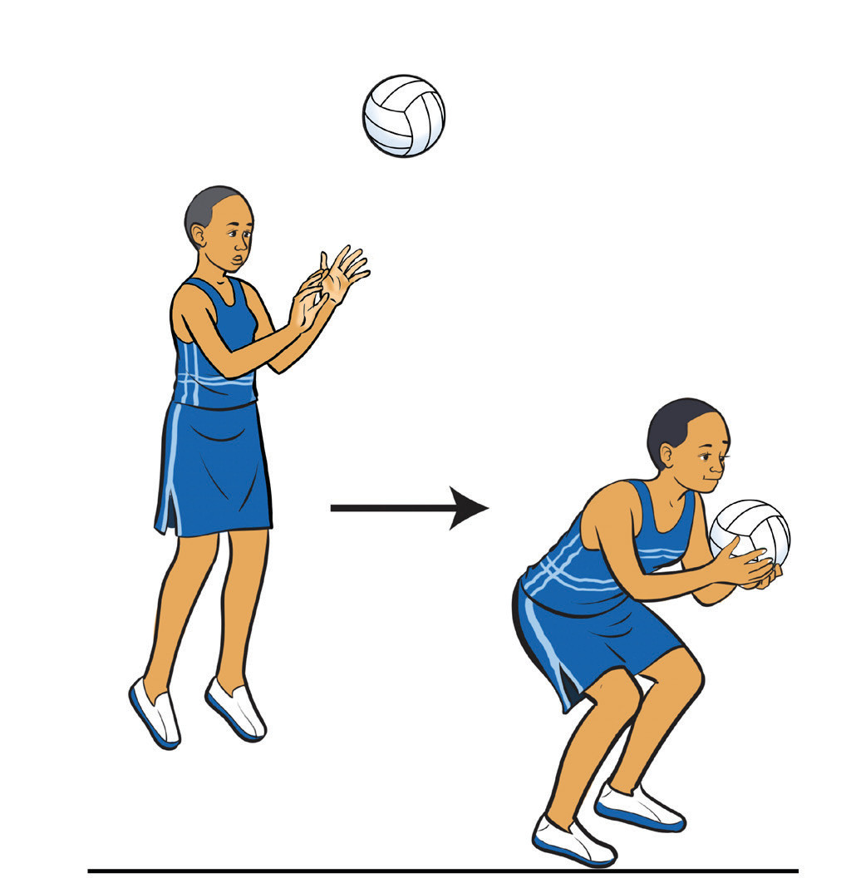

a bActivity 1.10
Using various drills, practice the one and two-foot landing repetitively to master the skills.
Shooting
Shooting is the action of attempting to score a goal by throwing the ball through the opponent’s hoop from within the goal circle. It is the way a team scores goals, it involves a one-handed shot, which requires a strong shooting arm and a supportive non-shooting hand. Shooting comes from a combination of leg power and upper-body strength, allowing players to release the ball with a high arm and follow through with a wrist action. Shooting is a crucial skill reserved only for a Goal Shooter (GS) and a Goal Attack (GA) and is only executed from inside the goal circle. Shooting technique directly impacts ability of a team to score. Mastering proper shooting techniques improves accuracy and increases the chances of making successful shots. The key shooting techniques include: